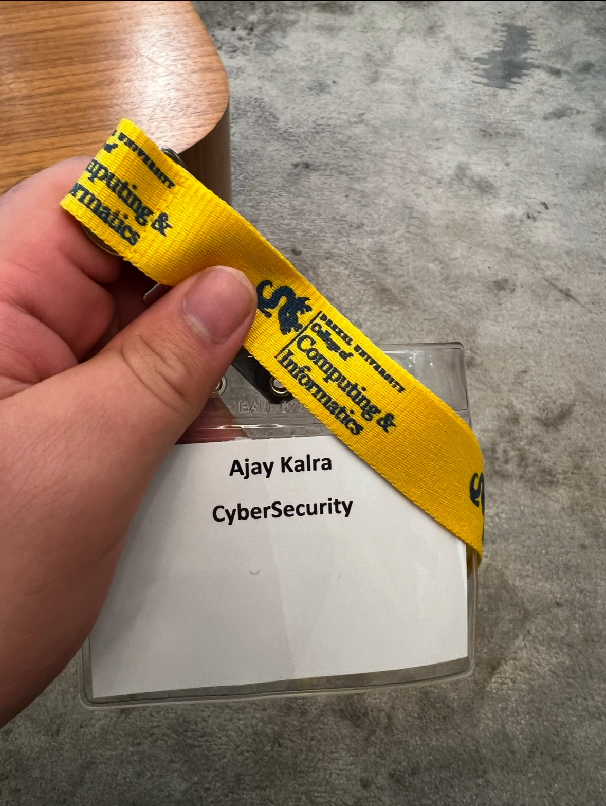
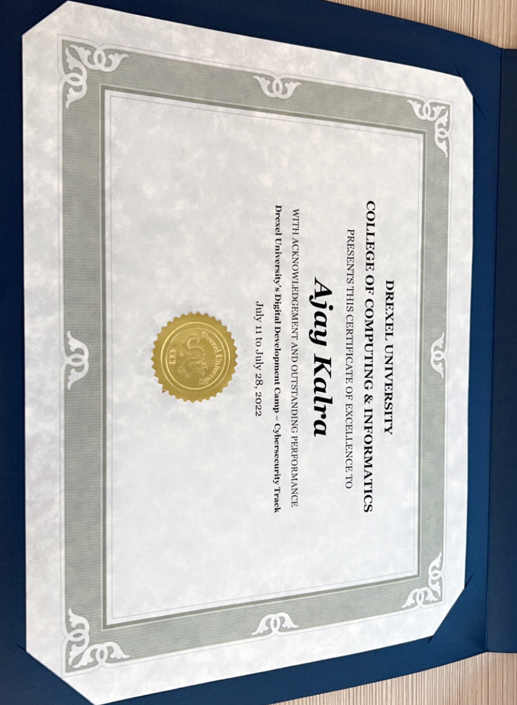
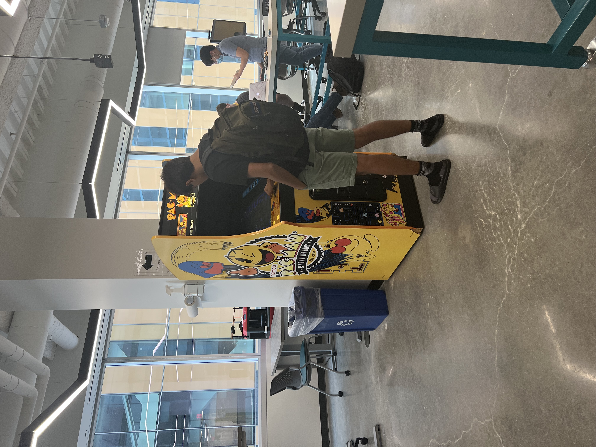

Case study
Drexel University Digital Development Camp
Built a collaborative security toolkit and deepened my understanding of threat modeling, network security, and team communication.
Project overview
Created a Python toolkit that packages reconnaissance, password auditing, and HTTP utilities into a single, easy-to-run resource.
- Port scanner, IP lookup, and hash/password crackers tailored for Debian and WSL.
- Wrote clear usage guides to help teammates adopt the toolkit quickly.
- Integrated HTTP request helpers to support web testing exercises.
Python
Recon
Automation
Collaboration
What I learned
- How to design scripts that are reliable across environments and easy to debug.
- Why concise documentation matters for onboarding and collaboration.
- How to prioritize security features that provide real value for hands-on labs.
Gallery


